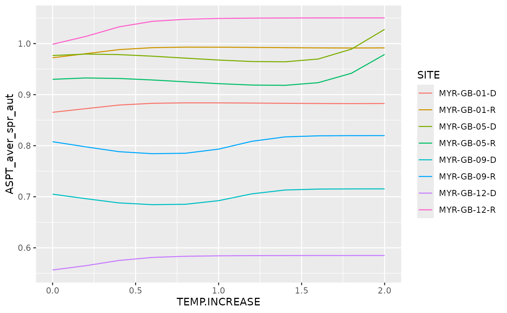

Tech demo: Temperature change
Tim Foster
2023-07-06
Source:vignettes/tech-demo-temperature-change.Rmd
tech-demo-temperature-change.RmdIntro
This is a quick example to demonstrate how the rict
package can be used to simulate the affect of temperature changes. You
will see how to:
- Update the input dataset
- Simulate changes to a predictive variables
- Predict and classify simulations
- Graph and interpret results
Setup
If you don’t have R installed on your local machine, try using Rstudio Cloud website to run R in your web browser - it’s quick and free to sign-up.
Before starting, make sure to have the required packages installed in
RStudio. We are going to use tidyverse and
rict packages:
NOTE: If these packages fail to load, follow this example
(replacing ggplot2 with tidyverse)
and follow this separate guide to
installing rict.
Run Predictions
Use the rict_predict function to calculate a set of
predictions. We can make predictions based on the demo input data
(demo_observed_values) which is available to use when the
rict library is loaded.
predictions <- rict_predict(demo_observed_values)The predictions output includes biological indices
predictions as well as the reference temperature values used in the
prediction (MEAN.AIR.TEMP and AIR.TEMP.RANGE
columns). Behind the scenes, the Grid Reference is used to find the
temperature values from a large file of 1km grid-square temperature
values for Great Britain stored in the rict package.
NOTE: The Northern Ireland model doesn’t use temperature as a predictive variable.
Reference Temperature
Temperature values (mean temp and temp range) are one of a number of variables (slope, altitude etc) used to predict the biological indices. It’s useful to be able to look-up reference temperature values, however, we only want the ‘reference’ temperature values as a starting point from which we can slowly increment the temperature values to simulate temperature increase.
To do this, we can include the temperature values as optional columns
in our demo input dataset. Usually, we don’t provide these columns as we
want rict to look-up these values, but if we do provide
these columns, rict will base the indices predictions on
the temperature values we provide.
Here we add the MEAN.AIR.TEMP and
AIR.TEMP.RANGE reference values from our predictions output
into our demo input dataset:
demo_observed_values <- cbind(rict::demo_observed_values,
"MEAN.AIR.TEMP" = predictions$MEAN.AIR.TEMP,
"AIR.TEMP.RANGE" = predictions$AIR.TEMP.RANGE
)Temperature Increments
We can now use the reference temperature values as a baseline and slowly increase the temperature.
To do this, we create a list for increasing temperatures simulating a 0-2 degree rise in temperature with 0.2 increments.
temperature_increments <- seq(0, 2, 0.2)
temperature_increments## [1] 0.0 0.2 0.4 0.6 0.8 1.0 1.2 1.4 1.6 1.8 2.0Simulate Temperature Increase
Here’s the big function: Loop through temperature increases and run classification and predictions for each temperature increment.
modelled_temperatures <- map_df(temperature_increments, function(increment) {
demo_observed_values$MEAN.AIR.TEMP <- demo_observed_values$MEAN.AIR.TEMP + increment
demo_observed_values$AIR.TEMP.RANGE <- demo_observed_values$AIR.TEMP.RANGE + increment
predict_modelled <- rict_predict(demo_observed_values)
classify_modelled <- rict_classify(predict_modelled, year_type = "single")
modelled <- inner_join(predict_modelled, classify_modelled, by = c("SITE", "YEAR", "WATERBODY"))
# Add temperature increase column so we know which results match which temperature increment
modelled$TEMP.INCREASE <- increment
modelled$SITE <- as.character(modelled$SITE)
return(modelled)
})
# Filter on one year - to make results easier to display
modelled_data <- modelled_temperatures %>%
filter(YEAR == 2016)The map_df function from the tidyverse
package, iterates over the temperature_increments values
and runs a function to return results for each increment.
For each loop/iteration the function will:
- Updates the temperature values by adding the
increment - Run the
rict_predictandrict_classifyfunctions - Join the prediction and classification outputs together using
inner_join - Returns the
modelledresults in a dataframe
For a deep-dive into iteration/loops and map_df type
functions, see this guide.
Results
Now we have the classification and predictions in a single dataframe,
we can review the results of our temperature simulation. We can plot the
average ASPT Spring and Autumn classification EQRs
(ASPT_aver_spr_aut) by each temperature increase. Note, the
higher the EQR value the ‘better’ the ecological status of the site.
ggplot(modelled_data, aes(x = TEMP.INCREASE, y = ASPT_aver_spr_aut, color = SITE)) +
geom_line()
We can see the EQRs have a mixed response to increasing temperature.
Note, you can find more about ggplot functions and creating
plots with data in this guide.
Confidence in Simulation
Can we really expect increasing temperature to affect EQRs in this
way? Are these simulated temperature increases beyond the scope of the
model and training data used to build the model? One way to provide a
partial answer this question, is to use the suitability code
(suitcode) provided in the predictions outputs. The
suitability code indicates if the input data is significantly different
from the data used to train the model (and therefore we are less
confident it can make accurate predictions). It assesses this on a scale
between 1-5, 1 - Low difference, 5 - High difference.
Here we select the suitability code and temperature increment to see how the confidence in the input data suitability changes as temperature increases:
select(modelled_data, SITE, TEMP.INCREASE, SuitCode) %>%
arrange(TEMP.INCREASE) %>%
head(32) # return the first 32 rows only## SITE TEMP.INCREASE SuitCode
## 1 MYR-GB-01-R 0.0 1
## 2 MYR-GB-05-R 0.0 1
## 3 MYR-GB-09-R 0.0 1
## 4 MYR-GB-12-R 0.0 2
## 5 MYR-GB-01-D 0.0 1
## 6 MYR-GB-05-D 0.0 1
## 7 MYR-GB-09-D 0.0 1
## 8 MYR-GB-12-D 0.0 2
## 9 MYR-GB-01-R 0.2 1
## 10 MYR-GB-05-R 0.2 1
## 11 MYR-GB-09-R 0.2 1
## 12 MYR-GB-12-R 0.2 4
## 13 MYR-GB-01-D 0.2 1
## 14 MYR-GB-05-D 0.2 1
## 15 MYR-GB-09-D 0.2 1
## 16 MYR-GB-12-D 0.2 4
## 17 MYR-GB-01-R 0.4 3
## 18 MYR-GB-05-R 0.4 3
## 19 MYR-GB-09-R 0.4 2
## 20 MYR-GB-12-R 0.4 5
## 21 MYR-GB-01-D 0.4 3
## 22 MYR-GB-05-D 0.4 3
## 23 MYR-GB-09-D 0.4 2
## 24 MYR-GB-12-D 0.4 5
## 25 MYR-GB-01-R 0.6 5
## 26 MYR-GB-05-R 0.6 5
## 27 MYR-GB-09-R 0.6 5
## 28 MYR-GB-12-R 0.6 5
## 29 MYR-GB-01-D 0.6 5
## 30 MYR-GB-05-D 0.6 5
## 31 MYR-GB-09-D 0.6 5
## 32 MYR-GB-12-D 0.6 5We can see the suitability code indicates the input data is increasing unsuitable as the temperature increases beyond 0.2 degrees. It appears we may be extrapolating beyond what the training data can reasonably allow. Therefore, there is low confidence in this simulation.